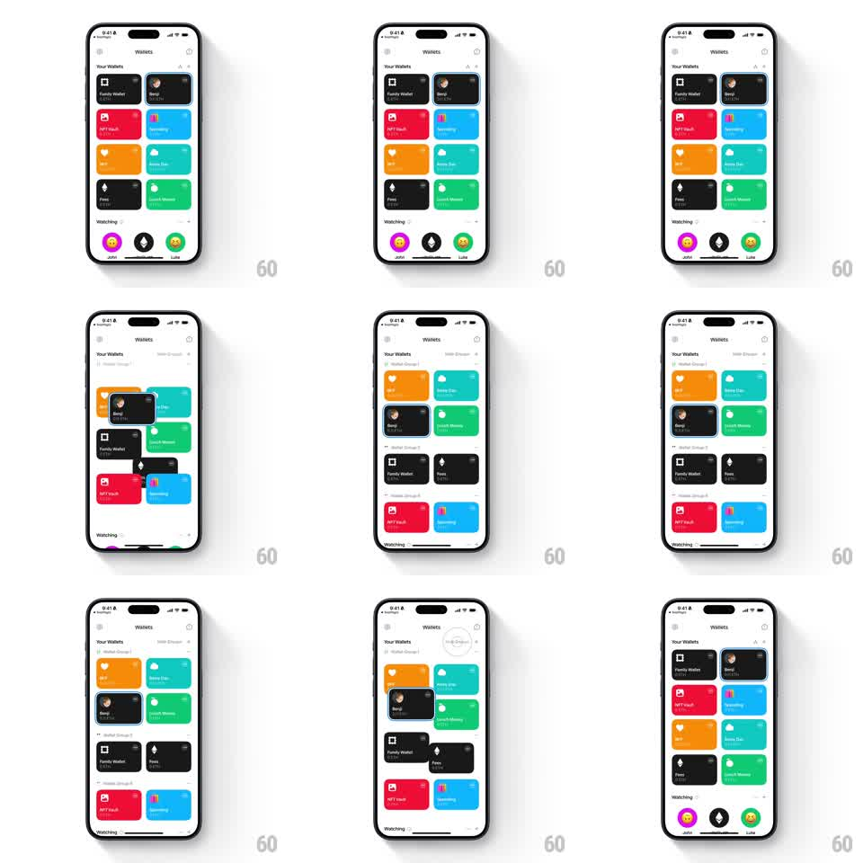

Media
Frame-by-frame

Rebuild this animation 1:1: Family's wallet grouping sort - the light Wallets grid springs from a flat 2-column grid into grouped sections ("Wallet Group 1", "Wallet Group 3", "Wallet Group 6" headers), cards flying to their new positions, then back to flat on toggle.

Rebuild this animation 1:1: Family's wallet grouping sort - the light Wallets grid springs from a flat 2-column grid into grouped sections ("Wallet Group 1", "Wallet Group 3", "Wallet Group 6" headers), cards flying to their new positions, then back to flat on toggle.
## Integration
Integration: stack-agnostic spec - springs given as stiffness/damping, timed motions as duration + curve; map every value to your framework and animation library of choice.
## Scene
Light Wallets screen: toggle control in the header. Flat state: 2-column grid of colored cards (Family Wallet, Benji, NFT Vault red, Base Dawg blue, orange heart, Rainy Day teal, Fren black, Luke's Money green), "Watching" row (John, vitalik.eth, Luke). Grouped state: section headers with counts - "Wallet Group 1" (orange heart, Rainy Day, Benji, Luke's Money), "Wallet Group 3" (Family Wallet, Fees), "Wallet Group 6" (NFT Vault, Base Dawg) - same card art in each section.
## Motion spec
Pattern: spring reorganization with shared-element cards.
- Toggle to grouped: the header control slides (spring ~340/22, 250ms); every card lifts slightly (scale 1.02, 150ms) then travels to its section position along individual arcs (spring ~280/20, 450ms, staggered 20ms per card by distance), shadows sweeping.
- Section headers fade in as their first card arrives (200ms, translateY 6pt -> 0), counts sliding in beside the titles (150ms).
- Cards settle with a small overshoot bounce (spring ~300/16, 200ms); the "Watching" row slides down to stay below the last section (spring ~300/22).
- Toggle back: sections' headers fade out (150ms) and cards fly back to flat-grid positions (same springs, reversed stagger).
## Calibration
- Cards never scale to zero or pop - every card is a shared element with a visible path.
- Group order and card order within groups match the data, not the old layout.
## Reduced motion
The grid crossfades between flat and grouped layouts (250ms).
## Don't miss
- Section headers are gray small-caps with card counts.
- Cards keep their exact colors/art through the flight.